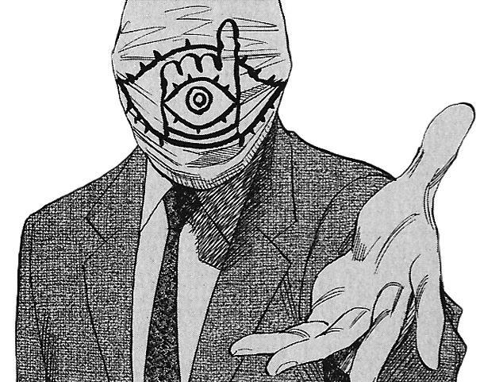

20th Century Boys : Manga Review
20th Century Boys atau 20世紀少年 (Nijusseiki Shōnen) adalah judul sebuah manga fiksi ilmiah karya Urasawa Naoki yang terkenal dengan karya lainnya seperti Monster, Pluto. Manga ini diterbitkan sejak tahun 1999 oleh Shōgakukan. Manga ini... menceritakan tentang Seorang pemuda yang terlibat dengan sebuah organisasi misterius bernama "Friend". Organisasi tersebut kemudian dicurigai pemuda tersebut sebagai dalang di balik bencana dan kejadian misterius di Jepang. Yang membuat pemuda tersebut merasa aneh adalah semua kejadian tersebut merupakan realisasi dari permainan imajinasi rencananya saat kecil.